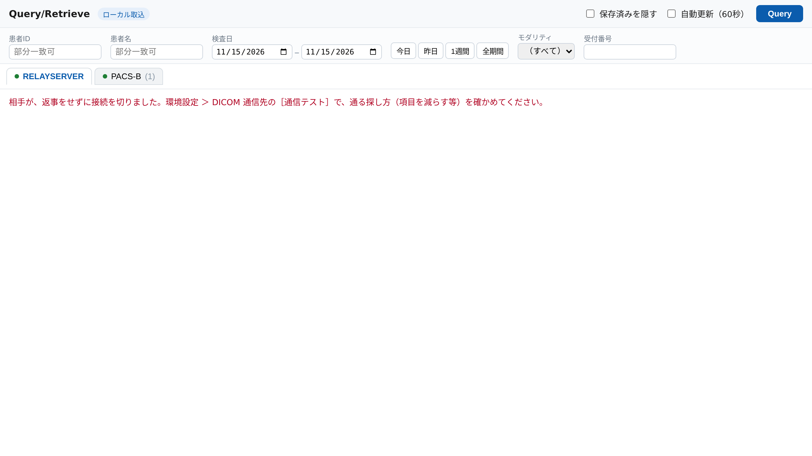
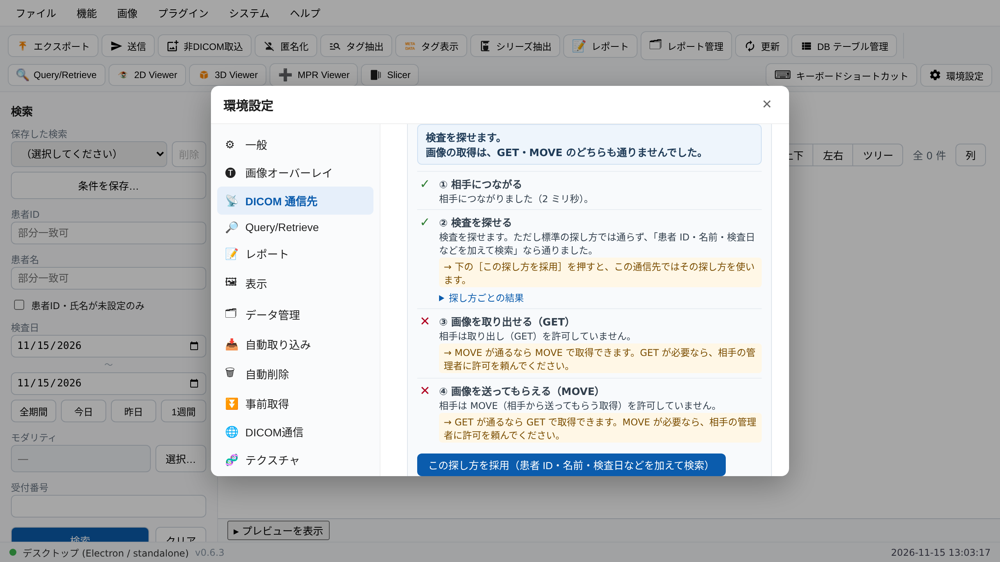
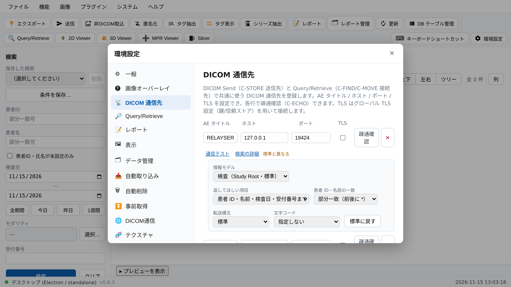
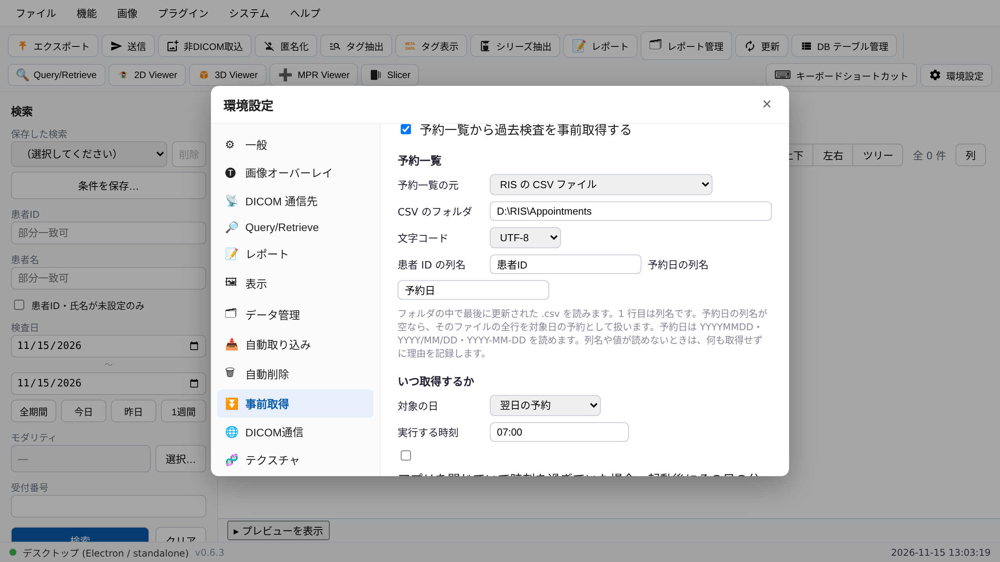
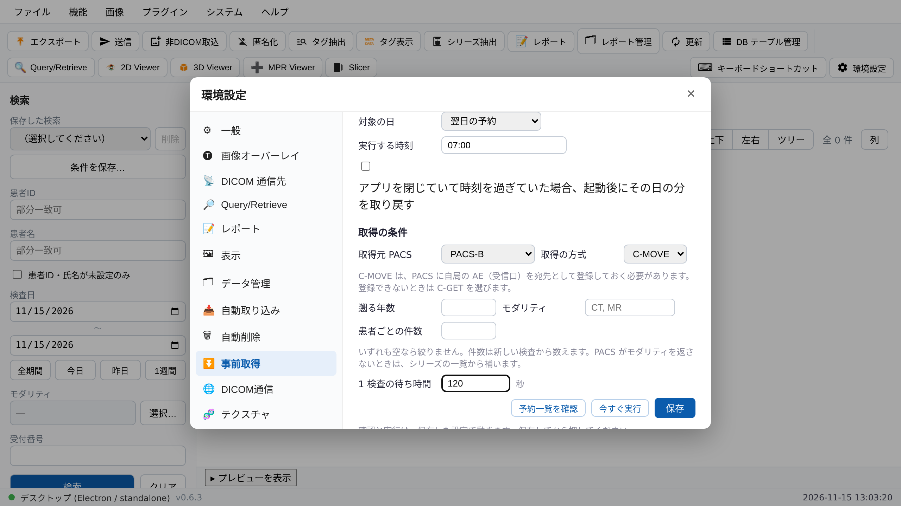
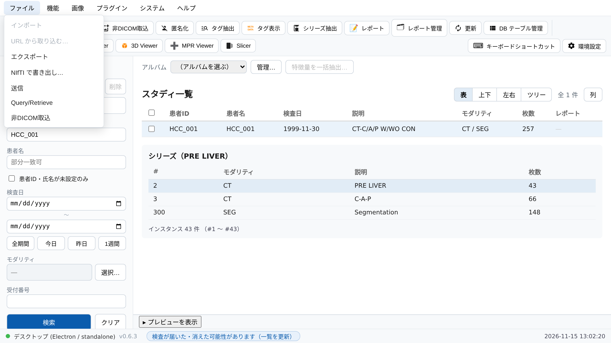
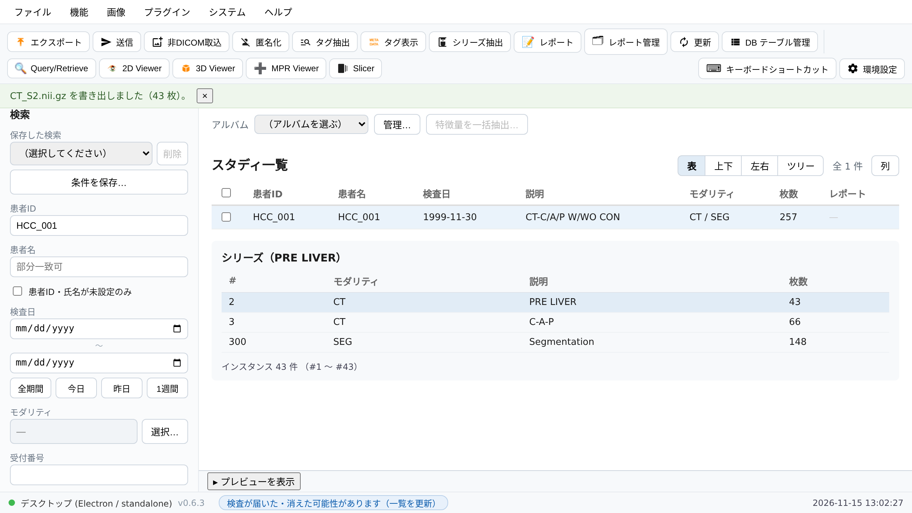

GRAPHY-NEXT v0.6.3 / 操作ガイド
相手の PACS とつながらないときに原因を探せる「通信テスト」、予約から過去検査を先に取り込んでおく「事前取得」、画像を NIfTI で書き出す機能を中心に、v0.6.2・v0.6.3 の変更をまとめます。
DICOM 通信先の「通信テスト」疎通確認は通るのに検索できない相手で、通る探し方を見つける
予約から過去検査を取り込む「事前取得」診察の前に、PACS から取り込んでおく
NIfTI で書き出し［ファイル］メニューから、選んだシリーズを .nii.gz で保存
そのほかの変更PET・3D・ROI・SEG・プラグイン
01 / 環境設定 ＞ DICOM 通信先

相手が検索を断った・エラーを返した・返事をせずに接続を切った、のとき、「0 件」ではなく理由が出ます

通信先の行の［通信テスト］を押すと、つながるか
検査を探せるか（探し方を 8 通り試します）
GET・MOVE を許されているか、を上から順に確かめます。✕ の行には次にすることが出ます
通る探し方が見つかったら、［この探し方を採用］→［保存］で、その通信先の検索方式にできます

検索の詳細: 情報モデル（Study Root／Patient Root）、返してほしい項目、患者 ID・名前の一致、転送構文、文字コードを、通信先ごとに変えられます
変えた通信先には「標準と異なる」と出ます。通常は触らず、［通信テスト］で見つけた組み合わせを採用してください
GET・MOVE の確認は、存在しない検査番号で問い合わせるだけで、画像は動きません。相手が受け付けても、存在しない番号なのでエラーを返すことがあり、その場合は △ で出ます。結果は［詳しく見る］の［報告用にコピー］で、相手の管理者に伝える文面にできます（件数・項目名・相手の status だけで、患者の氏名・ID は含みません）。
02 / 環境設定 ＞ 事前取得

「予約一覧から過去検査を事前取得する」をオンにします。既定値はありません（施設の運用で決まるため）
予約一覧の元: DICOM MWL か、RIS が書き出す CSV ファイルを選びます
CSV のときは、フォルダ・文字コード・患者 ID と予約日の列名を指定します。フォルダの中で最後に更新された .csv を読みます

対象の日: 当日・翌日・両方から選びます
実行する時刻: 07:00, 18:00 のように指定します
取得元 PACS: 「DICOM 通信先」に登録した相手から選びます
取得の方式: C-MOVE か C-GET。C-MOVE は、PACS 側にこのアプリの AE（受信口）を移動先として登録しておきます
03 / メイン画面 ＞ ファイル ＞ NIfTI で書き出し

シリーズを 1 本選び、［ファイル］＞［NIfTI で書き出し…］を押します。float32 の .nii.gz で保存し、患者情報は書きません

終わると、ファイル名と枚数が出ます。複数の時相があるシリーズは、4D として書き出します
書き出せないときは、理由が画面に出ます。位置の情報が無い・ガントリーチルトがある・向きや大きさの違う画像が混ざっている・カラー画像・位置ごとの枚数が揃わない、などです。デスクトップ版でだけ使えます。
04 / そのほか
host.nifti.*（NIfTI を作る・取り込む）、openViewer3d（視点と切断面を指定して 3D ビューアを開く）を追加。loadVolume は、等間隔でないシリーズを断ります。詳しい変更の一覧は、リリースノート（GitHub の Releases）を参照してください。